CS61B 第 7 讲：AList、扩容与对比 SLList（ALists, Resizing, vs. SLists）
本电子书信息 - 来源视频：【数据结构与算法 CS61B 2021】伯克利大学—中英字幕 p06 7_ALists, Resizing, vs. SLists - 课程讲义：Hug61B · 2.5 The AList - 讲义版权：本课程全部材料由 Josh Hug（UC Berkeley CS61B）以 Creative Commons 4.0 BY-NC-SA 许可发布——可自由分享、演绎，但须署名 Josh Hug、以相同许可共享，且不得商用。 - 本书由课堂录像字幕重构而成，术语以官方讲义为准；文中示意图为官方讲义原图，演示过程图截取自视频。
上一讲我们得到了漂亮的 DLList——增删取都很快、没有丑陋的特殊情况。既然它这么好，为什么还要折腾数组？本讲回答这个问题：构建一个用数组存储数据的 AList，并在这个过程中揭示链表 get 的软肋、朴素扩容的性能灾难，以及"几何倍增"这一化腐朽为神奇的关键技巧。
一、链表的性能谜题：get 为什么慢
DLList 的 getLast 是常数时间，但 get(int i) 很慢。原因：链表只有头尾两个引用，要取第 i 项，必须从一端沿链接一步步走到目标位置。
设想一个 100 万项的列表，有人要第 500,000 项——你不得不扫过半个列表。最坏情况（取正中间项）下，get 耗时与列表长度成正比（线性时间）；而 getLast 无论列表多大都是常数时间。（严谨的"大 O / 大 Θ"记法本课稍后正式定义，现在先用直观理解。）
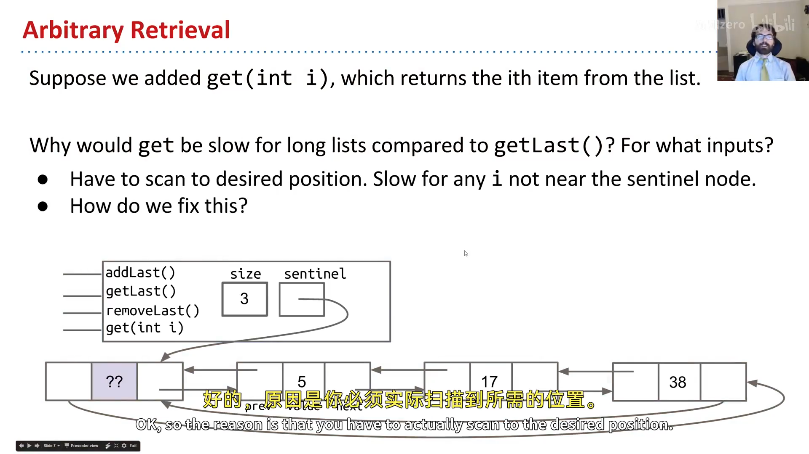
📷 链表 get 需要逐项遍历
回到原视频 (00:01:36)
为什么数组能更快？ 在现代计算机上，访问数组的第 i 项是常数时间——无论数组多大、要第几项，用方括号 items[i] 就能立即拿到（原理见讲义里的 Quora 链接，61C 会细讲）。既然没有"链接"要遍历，get 自然快。
于是我们换个思路，用数组实现列表——AList。
二、朴素数组列表：第一个 AList
我们要实现的 AList 支持与 DLList 完全相同的接口（addLast、getLast、get、size、removeLast），只是底层换成数组：
public class AList {
private int[] items;
private int size;
public AList() {
items = new int[100]; // 先定个容量上限 100
size = 0;
}
}
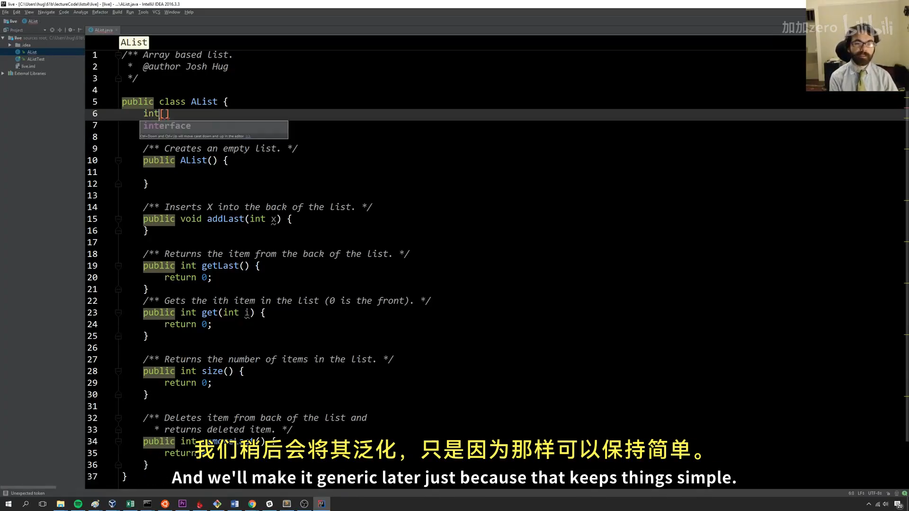
📷 AList 的 items 数组与 size
回到原视频 (00:05:13)
写方法前，先"手算一个小例子"抽象出不变量（invariants）：
- 下一个要插入（
addLast）的位置总是size； - 列表中的元素个数总是
size； - 最后一个元素的位置总是
size - 1。
有了不变量，三个方法一行到位：
public void addLast(int x) { items[size] = x; size += 1; }
public int getLast() { return items[size - 1]; }
public int size() { return size; }
public int get(int i) { return items[i]; }
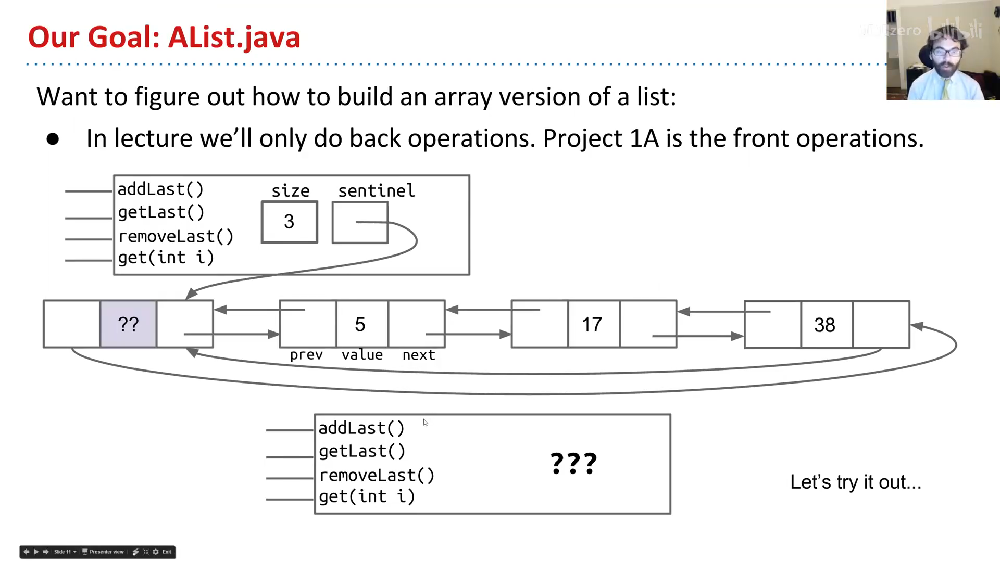
📷 AList 代码
回到原视频 (00:08:56)
不变量就是"安全设备"：写代码时随时可查，甚至能成为数学上证明程序正确性的工具。
removeLast 与"洞穴寓言"
实现 removeLast 前，Josh 讲了一个哲学类比——柏拉图的洞穴寓言：用户（洞穴里的人）看到的只是墙上抽象的"影子"（列表有 5、3、1、7、2、2 这些项）；我们（实现者，僧侣）在更高一层操纵具体现实（size、items、items[i] 这些内存盒子）。只要让"影子表演"符合用户预期，具体怎么改都行。
用户调用 removeLast，期望 -1 消失。落到具体现实上，该改哪些盒子？
size：从 6 减到 5（必须——不变量要求"元素个数 == size"、"最后一项在 size-1"）；items：不必换新数组；items[size]（那个 -1）：不必清零——只要size减了，那个位置就被"逻辑删除"了（下次addLast会覆盖它）。
public int removeLast() {
int x = getLast();
size -= 1; // 只需把 size 减一，旧值留着无妨
return x;
}
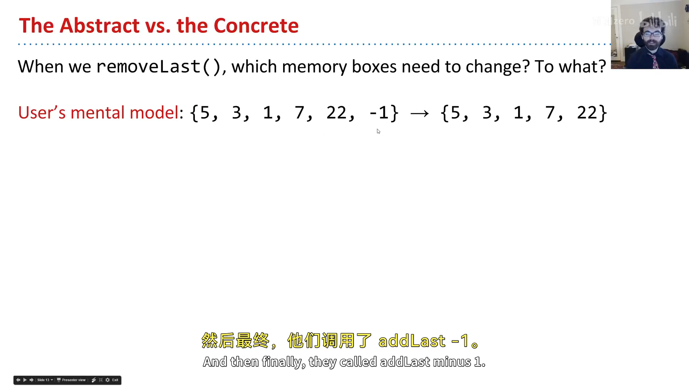
📷 removeLast 与洞穴寓言
回到原视频 (00:11:00)
用洞穴寓言的比喻：有人用手指射中了那只鸟，我们不必真的摧毁它，只要把它从火光前放下（size -= 1）就行。
三、朴素扩容：当数组满了
AList 目前上限 100。当 size == 100 时再 addLast，就会抛 ArrayIndexOutOfBoundsException。
但 Java 数组不能真正改变大小。于是我们玩个小戏法：新建一个更大的数组，把旧数据复制过去，再让 items 指向新数组（旧数组由垃圾回收器销毁）：
public void addLast(int x) {
if (size == items.length) {
int[] a = new int[size + 1];
System.arraycopy(items, 0, a, 0, size);
items = a;
}
items[size] = x;
size += 1;
}
这个过程俗称"扩容（resizing）"，但严格说是个误称——数组没变，我们只是造了个更大的新数组。为让代码更整洁，可以抽出私有的 resize(int capacity) 方法，把"新建数组 + 复制 + 改指向"封装起来。
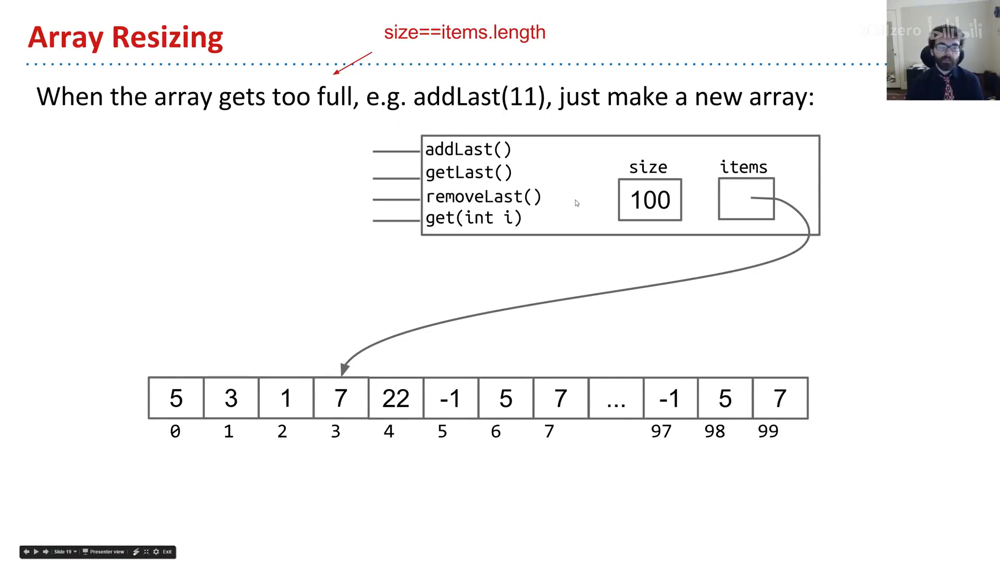
📷 朴素扩容：新建更大数组并复制
回到原视频 (00:17:50)
四、分析朴素扩容：一场性能灾难
跑一个实验：SLList 和 AList 各 addLast 100,000 次。
SLList：快到几乎测不出时间；- 朴素
AList：要好几秒。
为什么？做个小谜题：从满的 size=100 数组开始，调用 addLast 两次，一共要创建并填充多少个盒子？——每次扩容都要新建数组并复制全部旧数据：第一次新建 101、复制 100；第二次新建 102、复制 101；再加上插入的 1 个，合计 203 个盒子。
推广：从 100 一路 addLast 到 1000，要创建 101 + 102 + … + 1000 ≈ 500,000 个盒子（用 1+2+…+n = n(n+1)/2 估算，约 1000²/2）。
把"总耗时 vs 操作次数"画成图：
SLList是一条直线——每个add耗时恒定（常数时间；常数积分得直线）；- 朴素
AList是一条抛物线——每次操作耗时随规模线性增长（直线积分得抛物线）。
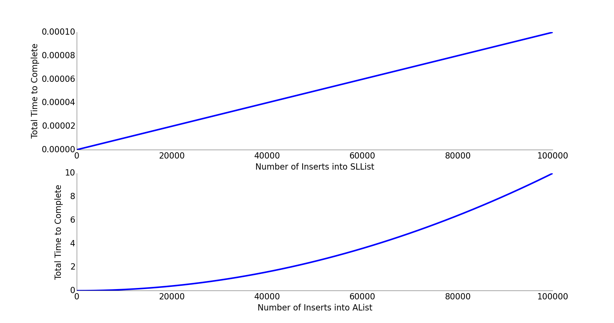
插入 10 万项，抛物线意味着约 100000² / 100000 = 100000 倍的差距——绝对不能接受。
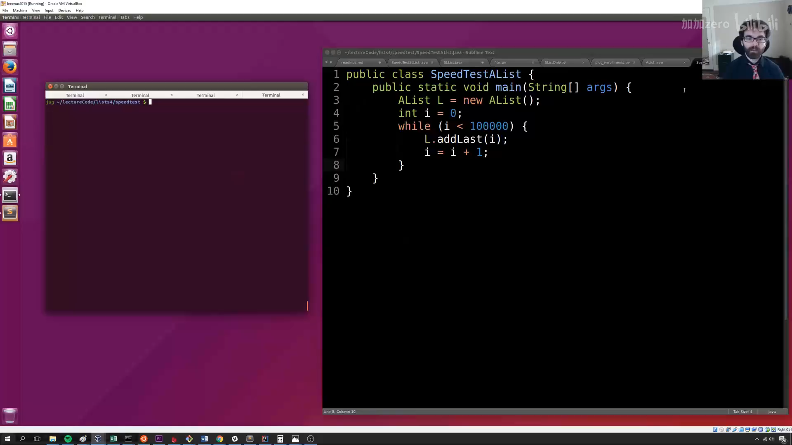
📷 速度对比实验
回到原视频 (00:24:28)
五、几何扩容：化抛物线为直线
问题出在 resize(size + 1)——每次只加一点点。解法出奇简单：乘以一个因子，而不是加一个常量。
public void insertBack(int x) {
if (size == items.length) {
resize(size * RFACTOR); // 乘法（几何）而非加法
}
items[size] = x;
size += 1;
}
课上 Josh 现场演示了关键区别：把"每次 +10"改成"每次 ×2"后，即使把测试规模从 10 万提到 100 万、再到 1000 万，AList 都飞快。
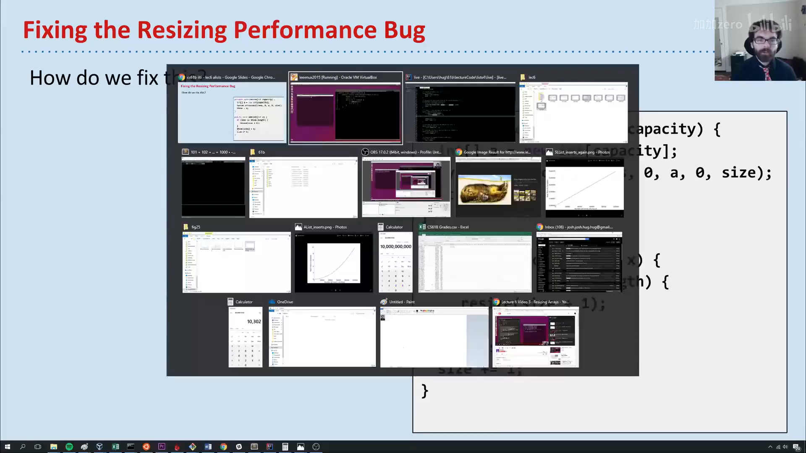
📷 几何扩容：乘以 RFACTOR
回到原视频 (00:30:52)
为什么"加 10"不行、非"×2"不可？加 10 只是把问题隐藏了——规模一大依旧原形毕露（加法本质还是线性增长）；只有乘法才能让扩容次数随规模对数增长，从而把摊销成本摊薄到常数级别。（完整分析留到期末章节。）
编者说明：Python 内置的
list、Java 的ArrayList等真实实现，内部用的就是这种"几何倍增"策略。这正是本讲最核心、也最实用的一个知识点。
六、内存性能：使用率与缩容
几何扩容解决了时间，但带来空间问题：假如插入 10 亿项后删掉 9.9 亿项，我们只用了 1% 的盒子，其余 99% 全空着——纯浪费。
于是引入使用率（usage ratio，也叫负载因子 load factor）：
使用率 R = size / items.length
当 R 跌破某个阈值（典型实现取 0.25），就把数组缩容（通常减半）。下图的使用率只有 0.04，远低于 0.25，应当缩容：
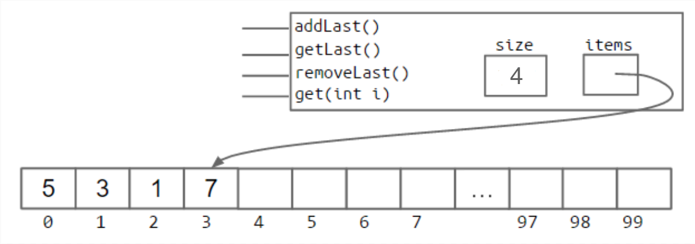
这背后是贯穿本课程的大主题：时间与空间的权衡——用空间换时间（缓存 size、几何扩容预留空间），或用时间换空间（缩容回收闲置盒子）。
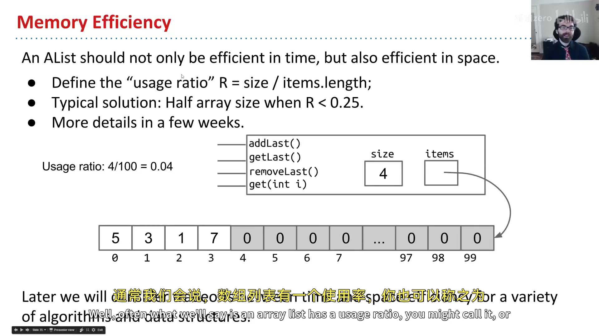
📷 使用率与缩容
回到原视频 (00:33:39)
七、泛型 AList 与"滞留"陷阱
最后让 AList 泛型化，能装任意类型（<Item>）：
public class AList<Item> {
private Item[] items;
private int size;
...
}
但这里有一个 Java 的语法坑：不能直接 new Item[8]（泛型数组不被允许）。必须用一次丑陋的强制类型转换：
Item[] items = (Item[]) new Object[8];
这会带来一条编译警告，只能忍受——这是泛型实现方式的副作用。
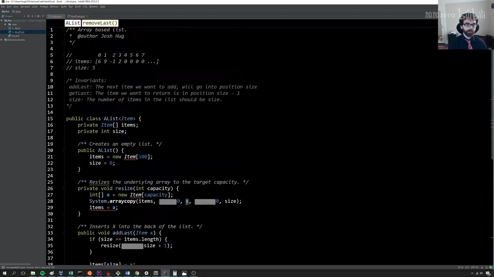
📷 泛型 AList 的强制类型转换
回到原视频 (00:35:41)
另一个微妙改动：清除"滞留（loitering）"。回到洞穴寓言——整数版的 removeLast 可以不清零旧值（反正会被覆盖）；但泛型版存的是对象引用，如果不把 items[size-1] 置为 null，那个对象就会一直被引用、垃圾回收器永远不会回收它。比如删掉一张 1MB 的图片后仍留着它的引用，内存就被白白占用。
public Item removeLast() {
Item x = getLast();
items[size - 1] = null; // 清除引用，避免 loitering
size -= 1;
return x;
}
这个 bug 很隐蔽，只在"存大量对象、又频繁删除"时才明显，但会造成严重的内存浪费。记住：Java 只在最后一个引用丢失时才回收对象；所以，不要滞留（Don't loiter）。
小结
AList 用数组换来了常数时间的 get，代价是 addLast 需要扩容。朴素扩容是性能灾难（抛物线）；换成几何倍增后，时间摊薄到常数级（直线），再配合使用率阈值缩容回收空间。由此也完成了链表与数组两条正交思路的对照：SLList/DLList 两端操作快、中间慢；AList 随机访问快、尾部插入需摊薄扩容成本。
附：官方参考与延伸阅读
- 本讲讲义（The AList）：https://joshhug.gitbooks.io/hug61b/content/chap2/chap25.html
- 为什么数组访问是常数时间（Quora）：https://www.quora.com/Why-does-accessing-an-array-element-take-constant-time
- AList DIY 起始代码：https://github.com/Berkeley-CS61B/lectureCode/tree/master/lists4/DIY
- 朴素实现参考：https://github.com/Berkeley-CS61B/lectureCode/tree/master/lists4/naive
- Project 1A（LinkedListDeque）：http://sp19.datastructur.es/materials/proj/proj1a/proj1a
- Discussion 3 / Lab 2：见讲义 What's next 一节
版权与许可：本电子书中的课堂讲解内容重构自 Josh Hug（UC Berkeley）CS61B 课程录像；课程全部材料依据 Creative Commons 4.0 BY-NC-SA 许可发布。请在使用时署名 Josh Hug、以相同许可共享，且不得用于商业用途。书中示意图来自官方讲义原图，演示过程截图来自原视频，相应权利归原作者与视频权利人所有。